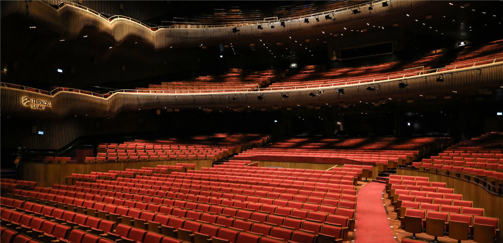
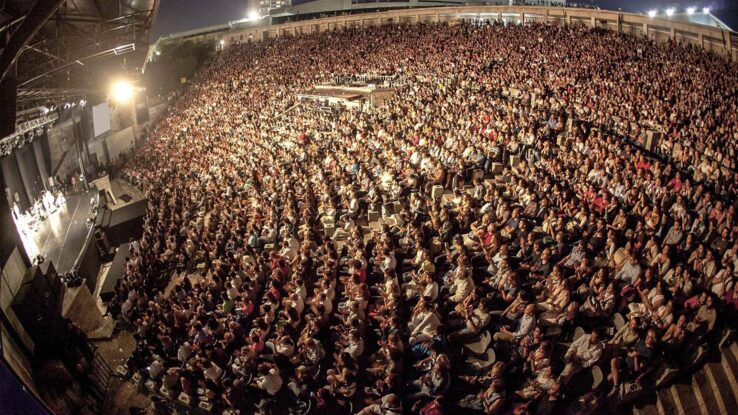
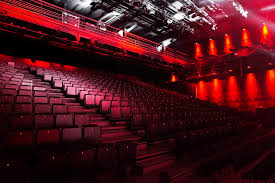
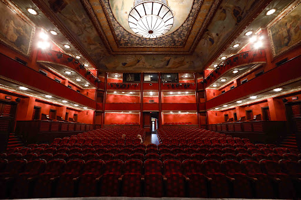
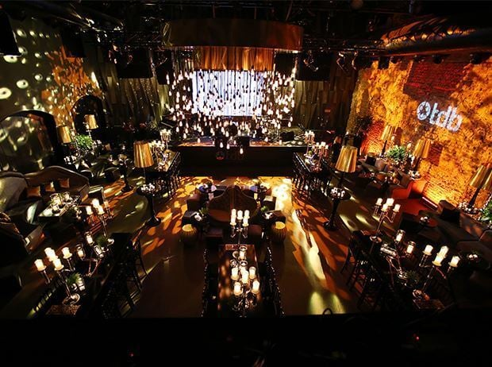

Konserler, tiyatro oyunları, müzikaller ve daha fazlası için İstanbul’un en modern sahnelerinden biri. Sanatın kalbi burada atıyor.
Adres: Levazım, Koru Sokağı No:2, Zorlu Center, Beşiktaş/İstanbul
Etkinlik Günleri: Haftanın her günü
Bilet: Etkinliğe göre değişken

Yaz aylarında yıldızların altında konser keyfi. İstanbul’un en nostaljik ve sevilen açık hava sahnelerinden biridir.
Adres: Harbiye, Taşkışla Cd. No:8, 34367 Şişli/İstanbul
Sezon: Mayıs – Eylül arası
Bilet: Ücretli, Biletix üzerinden satışta

Anadolu Yakası’nın yükselen yıldızı DasDas; tiyatro, konser ve atölye etkinlikleriyle sanatseverlere alternatif bir kültür sunar.
Adres: Merdivenköy, Metropol İstanbul AVM, Ataşehir/İstanbul
Etkinlik Günleri: Çoğunlukla hafta içi akşam ve hafta sonu
Bilet: Ücretli (Biletinial veya Passo)

Klasik müzik, bale ve opera temsillerinin adresi olan Süreyya Operası, tarihi atmosferiyle Kadıköy'ün en zarif mekânlarından biridir.
Adres: Osmanağa, General Asım Gündüz Cd. No:29, Kadıköy/İstanbul
Etkinlikler: Devlet Opera ve Balesi sezon programına göre
Bilet: Biletinial ve gişe

Canlı müzik performansları, DJ setleri ve özel etkinliklerle gençlerin vazgeçilmezi olan Babylon, enerjisiyle dikkat çeker.
Adres: Bomontiada, Birahane Sok. No:1, Şişli/İstanbul
Etkinlik Günleri: Özellikle Cuma – Cumartesi geceleri
Bilet: Biletix üzerinden